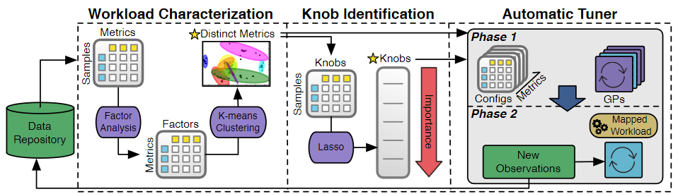
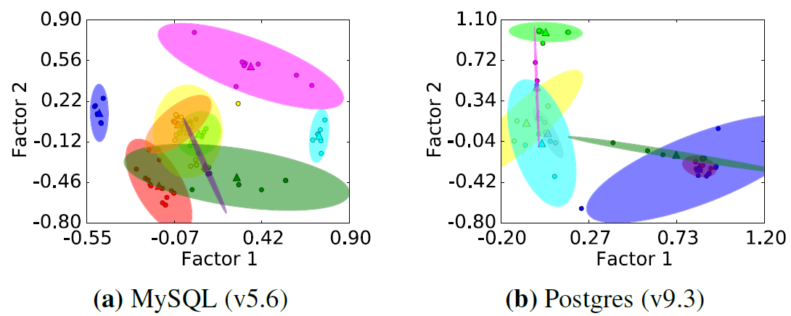
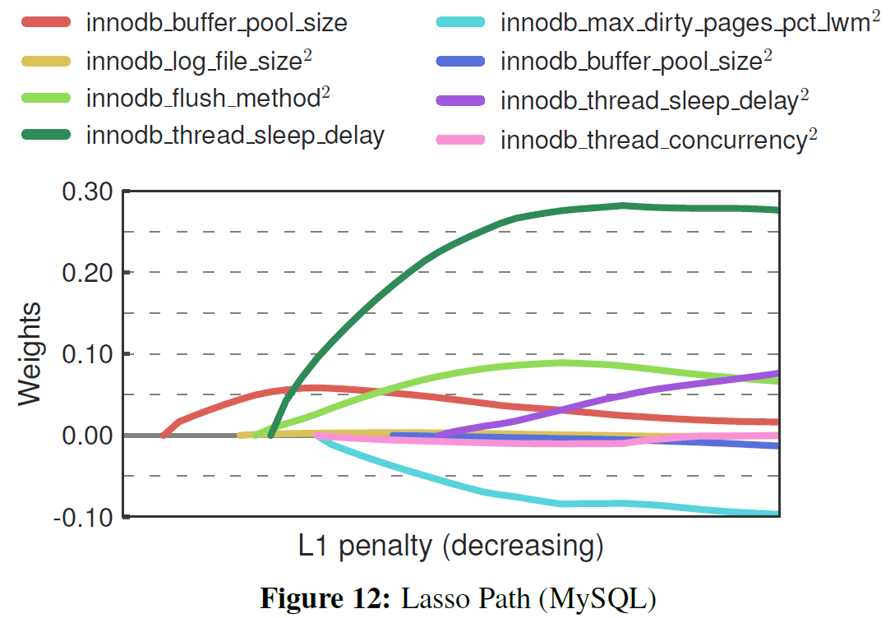

Automatic Database Management System Tuning Through Large-scale Machine Learning
- Authors: Dana Van Aken, Andrew Pavlo, Geoffrey J. Gordon, Bohan Zhang
- Institute: CMU, Peking University
- Published at SIGMOD'17
- Paper Link: http://www.cs.cmu.edu/~pavlo/papers/p1009-van-aken.pdf
Problem
To tune the configurations of a DBMS using ML models.
Assumptions
- The tuner must have administrative privileges to modify the DBMS's configurations.
- The cost of restarting a DBMS is ignored.
- The physical design is reasonable.
- Proper indexes, materialized views, other database elements have been installed.
Method

Workload Characterization
OtterTune collects the internal metrics because those metrics directly relate to the knobs and more predictable when tuning knobs.
- the number of pages read/writes
- query cache utilization
- locking overhead
How to Pick Up Useful Metrics
Some metrics may redundant because
- they are the same but in different units (MB/KB...)
- they are highly correlated
Steps:
- Build a matrix \(X\) where \(X_{ij}\) represents the value of metric \(i\) on configuration set \(j\)
- Performs Factor Analysis to reduce the dimension of \(X\) to \(U\) where \(U_{ij}\) represents the value of metric \(i\) on the \(j\)-th factor
- Performs k-means clustering and pick up only the most representative metric in each cluster
- \(K\) is determined by a heuristic algorithm without human intervention
Example Results:

Knob Identification
- Use LASSO to evaluate the impact of each knobs
- \(X\): knobs
- \(y\): metrics
- The most common feature selection algorithm
- Computationally efficient
- Includes polynomial features to test if there is dependency between two knobs
- For example, product "Buffer Pool Size" and "Log Buffer Size" as a feature to see if LASSO pick up this feature
- Use incremental approach (gradually increase the number of selected knobs/features and check the effectiveness)
Example Results:

Automatic Tuner
Steps
- Find the most similar workload in the past (workload mapping)
- Build a matrix \(X_m\) for each metric \(m\) where \(X_{mij}\) represents the value of metric \(m\) when running the DBMS on workload \(i\) with configuration set \(j\)
- The values must be normalized.
- Compute euclidean distance for the target workload \(i\) with other rows in the same matrix
- Average the distance for each row/workload across matrixes as scores
- Choose the workload id with the lowest score as the most similar workload
- Build a matrix \(X_m\) for each metric \(m\) where \(X_{mij}\) represents the value of metric \(m\) when running the DBMS on workload \(i\) with configuration set \(j\)
- Use Gaussian Process (GP) to predict the best configuration set
Conclusion
Interesting insights
- Uses not only external metrics but also internal metrics for evaluating the performance of a configuration
- The way of picking up the useful metrics
Questions
- How do they use the dependencies between knobs? Do those become features?
- Not sure
- Do they use the variance given by Gaussian Process?
- They use the variance as the confidence level
- Does OtterTune use any workload information such as queries or transactions for tuning?
- No